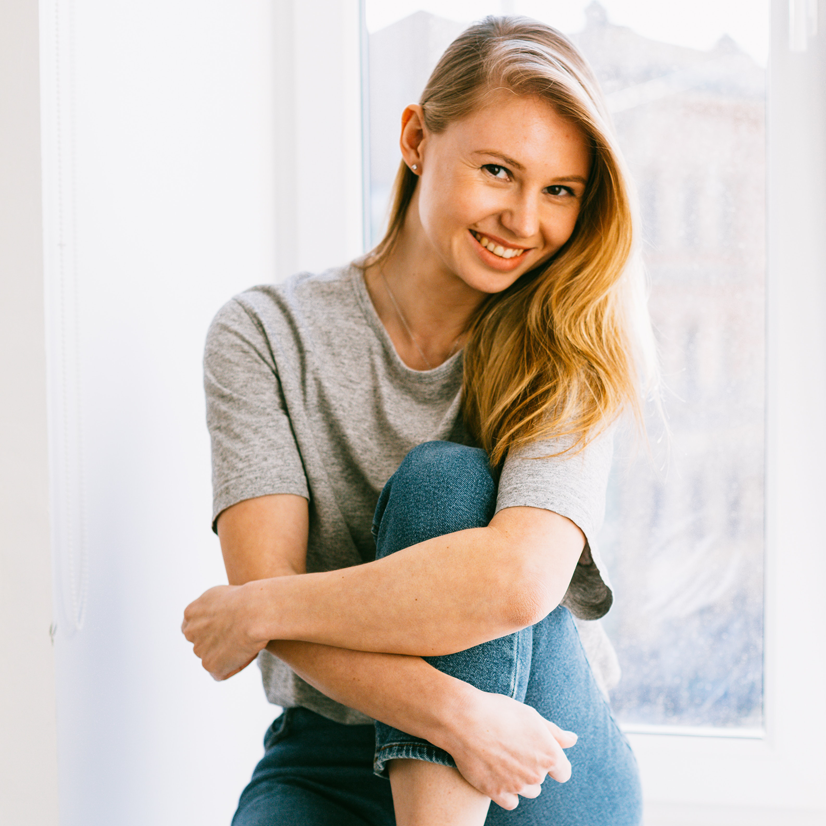

Award-winning wedding photography
Rosalie Goldstein is a freelance wedding photographer, who is based in London, but travels all over the UK.
For the last 10 years, she has spent her days photographing weddings and engagement, eternalise the beauty and the happiness of these events in her photographs.
Her work has been features in several magazines and publications, and she has won several prizes, some of which are:
Global Wedding Awards
Year 2025
English Wedding Awards
Year 2026
Wedding Industry Awards
Year 2028
Recent work
These photos were taken from some of Rosalie's most recent shoots. To view enlarged photo, please click on image.
Services
Standard Package
Features:
- 6 hours of wedding photography
- personalised USB stick in satin bag
- 30 professionally edited photos
- 20 page photobook
Price: £600
Download brochureLuxe Package
Features:
- 12 hours of wedding photography
- Engagement photoshoot
- personalised USB stick in satin bag
- 60 professionally edited photos
- 30 page photobook
- 120 thank you cards
Price: £1000
Download brochureAlthough Rosalie is based in London, she covers all areas of the UK and is happy to travel to your location. Please use the contact from below to discuss your requirements.
About
Rosalie Goldstein, Wedding Photographer
Rosalie has been working as a wedding photographer for 10 years and she has been loving it ever since her first assignment.
With her work she creates photos that authentically capture the day as it is - full of life, happiness and buzz - so that anytime you look back on your photos, you are taken back to your wedding and can relive it.
Even people who are not present - for example because they were not yet born - should be able to look at the photos and know how special that day was.
When Rosalie is taking photographs, you will barely notice that she is around. And that's her secret weapon: It enables her to capture the unfiltered emotions of people, without them feeling uncomfortable in front of the camera or feeling like they have to pretend or put on a show.
You will definitely not get any staged photos! Instead you will get images that truly capture the joy and love that is felt.
If this sounds good, please contact her by filling out the contact form or by calling 0771234567. She would love to be part of your special day!
What customers say
Rosalie is an amazing photograper. She really goes the extra mile for her clients and I could see the talent and vision in the photos she has created for us.
Richard Tafford
Rosalie did our wedding photos and they are absolutely stunning! Not only did she manage to capture the people's personalities in the images, but her photos also show the beautiful colours, the light and the mood of the day. I could not be happier with the results.
Emma Robinson
Rosalie was so helpful and friendly! You can tell by interacting with her that she is a professional, who knows what she is doing. Although throughout the day you could barely tell that she was there, she managed to take images that really captured the people, the romantic setting of the location and the overall happy vibe. I can only recommend her.
Katy Williams